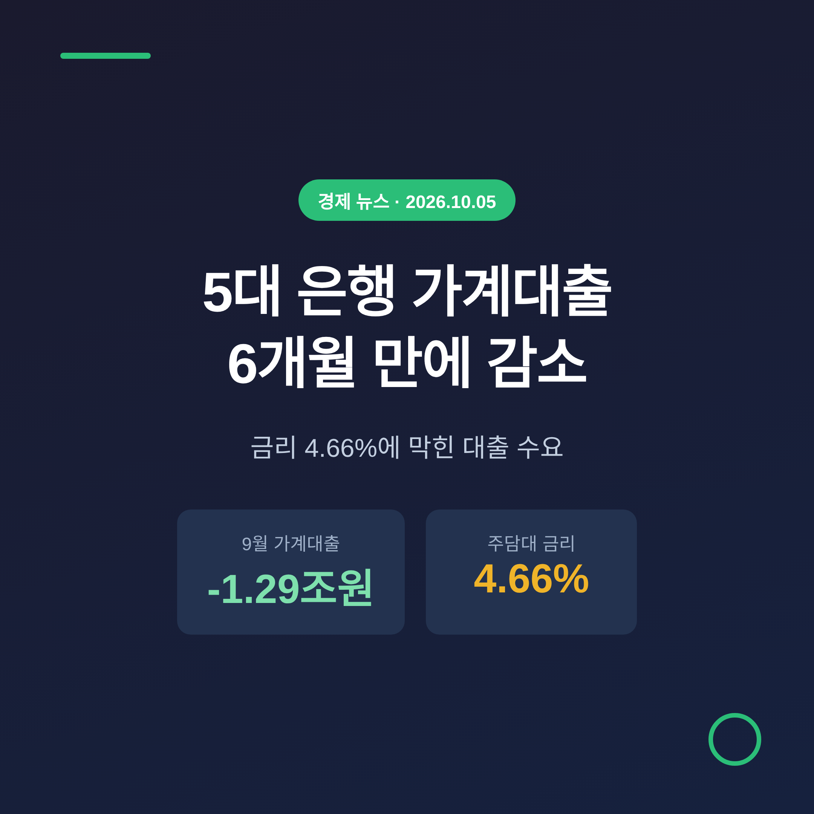
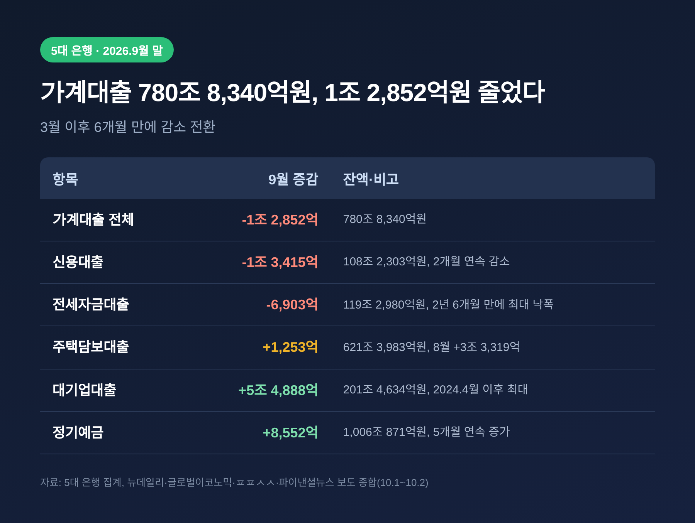
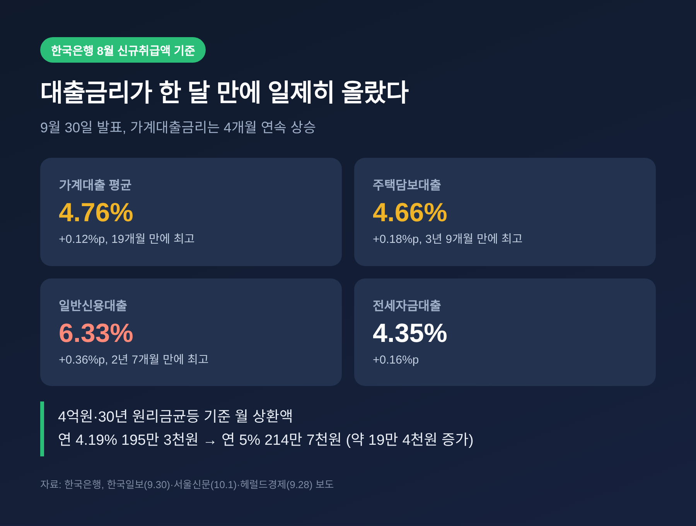
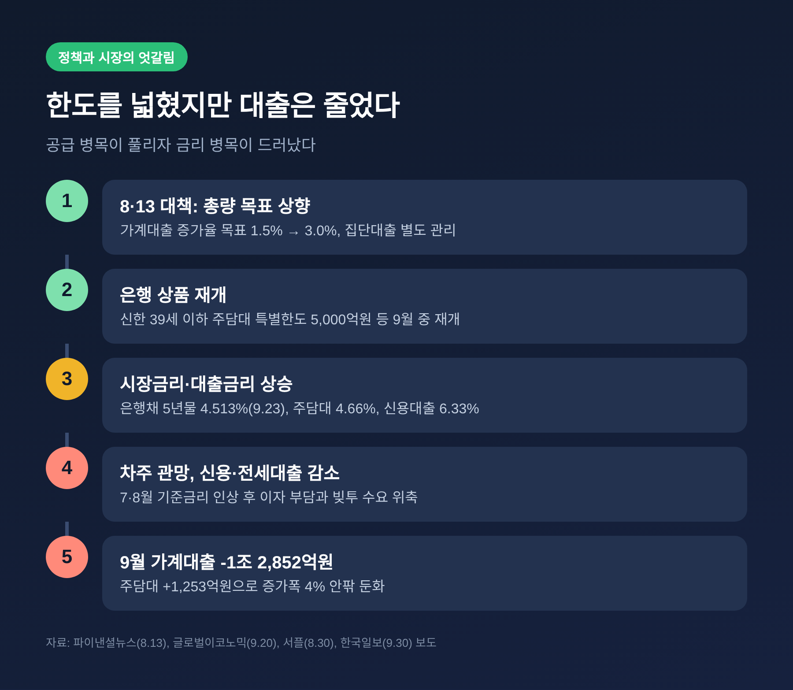
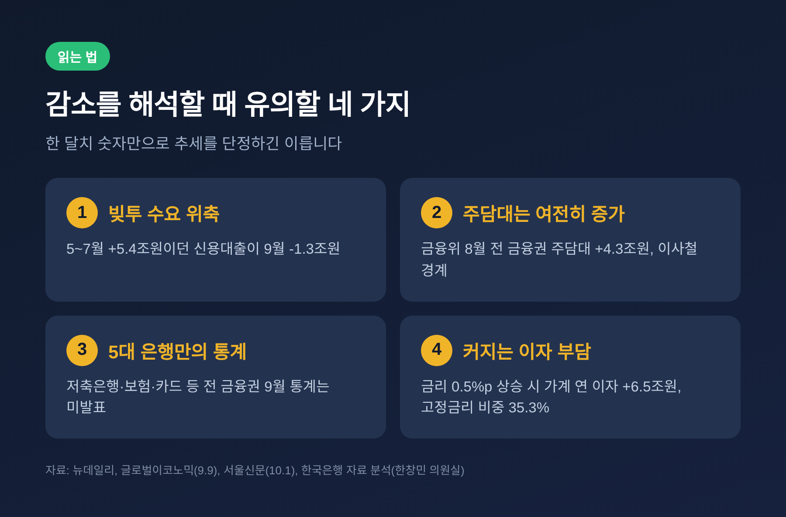
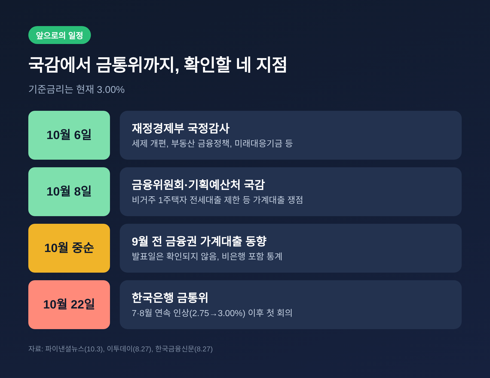

5대 은행 가계대출 6개월 만에 감소, 금리 4.66%에 막힌 대출 수요

이번 글에서는 10월 1일 집계가 나온 5대 은행의 9월 가계대출 동향을 정리해 보겠습니다. 가계대출 잔액이 6개월 만에 줄었고, 감소를 이끈 것은 신용대출과 전세대출이었습니다. 당국이 대출 한도를 넓혔는데도 금리가 먼저 수요를 눌렀다는 점이 이번 통계의 핵심입니다.
9월 가계대출, 무엇이 나왔나
KB국민·신한·하나·우리·NH농협 5대 은행의 9월 말 가계대출 잔액은 780조 8,340억원이었습니다. 8월 말보다 1조 2,852억원 줄어든 수치입니다. 3월 이후 6개월 만에 처음 감소로 돌아섰습니다.
신용대출은 108조 2,303억원으로 1조 3,415억원 줄었습니다. 2개월 연속 감소입니다. 5~7월 사이 5조 4,120억원이 늘었던 것과 대조적입니다. 전세자금대출도 6,903억원 줄어 119조 2,980억원이 됐고, 2년 6개월 만에 가장 큰 낙폭을 기록했습니다.
주택담보대출은 감소하지 않았습니다. 1,253억원 늘어 621조 3,983억원입니다. 다만 8월 증가폭이 3조 3,319억원이었으니, 증가 속도는 4% 안팎으로 떨어진 셈입니다.

흐름이 모든 대출에서 꺾인 것은 아닙니다. 대기업대출은 5조 4,888억원 늘어 2024년 4월 이후 가장 큰 증가폭을 보였습니다. 정기예금도 1,006조 871억원으로 5개월 연속 늘었습니다. 빚을 내는 쪽은 줄고, 돈을 맡기는 쪽은 늘었습니다.
금리가 수요를 눌렀다
원인으로 가장 먼저 꼽히는 것은 금리입니다. 한국은행이 9월 30일 발표한 8월 예금은행 대출금리를 보면 부담이 어느 정도인지 드러납니다.
가계대출 평균금리는 연 4.76%로 한 달 새 0.12%포인트 올랐습니다. 4개월 연속 상승이며 19개월 만에 가장 높습니다. 주택담보대출 금리는 4.66%로 0.18%포인트 올라 3년 9개월 만의 최고치입니다. 일반신용대출은 6.33%로 0.36%포인트 뛰어 2년 7개월 만에 최고를 기록했습니다.

월 상환액으로 옮기면 체감이 더 큽니다. 헤럴드경제가 4억원을 30년 원리금균등으로 빌리는 경우로 계산했습니다. 연 4.19%에서는 월 195만 3,000원이었고, 연 5%에서는 214만 7,000원입니다. 한 달에 약 19만 4,000원이 늘어납니다. 5대 은행 고정형 주담대 금리의 하단은 3월 4.19%에서 9월 23일 5%대로 올라섰습니다.
은행도 사정은 비슷합니다. 한 은행권 관계자는 가산금리를 낮추려 노력하지만 "지표금리가 무섭게 오르고 있다"고 말했습니다. 준거금리인 은행채 5년물은 9월 23일 4.513%였습니다. 미국 30년물 국채금리가 2002년 이후 처음 5.61%를 넘어선 영향도 거론됩니다.
예금과 대출의 격차도 벌어졌습니다. 대구일보가 전한 한국은행 자료로는 8월 예금금리가 3.21%로 변하지 않은 사이 대출금리는 4.40%로 0.13%포인트 올라, 예대금리차가 1.06%포인트에서 1.19%포인트로 커졌습니다. 대출은 비싸지고 예금은 안정적이니, 빚을 늘리기보다 맡겨 두는 쪽으로 기운 것입니다. 이는 정기예금이 5개월 연속 늘어난 흐름과도 맞닿아 있습니다.
기준금리도 배경입니다. 한국은행은 7월에 이어 8월 27일 금통위에서 기준금리를 2.75%에서 3.00%로 올렸습니다. 위원 7명 중 6명이 찬성했고, 황건일 위원만 동결 의견을 냈습니다. 이자 부담을 느낀 차주들이 관망에 들어갔다는 것이 은행권의 설명입니다.
문을 넓혔는데 왜 줄었나
여기서 배경을 짚어야 합니다. 정부는 8월 13일 부동산 대책에서 올해 가계대출 증가율 목표를 1.5%에서 3.0%로 올렸습니다. 중도금·잔금 같은 집단대출은 별도로 관리하기로 했습니다. 이른바 '대출 오픈런'을 줄이겠다는 취지였습니다.
5대 은행의 연간 증가 목표는 서플의 집계로 4조 3,400억원에서 6조 9,800억원으로 약 60% 늘었습니다. 파이낸셜뉴스는 단순 계산으로 8조 6,726억원, 두 배 수준이라고 전했습니다. 은행별 최종 목표는 추후 확정이라 보도마다 숫자가 다릅니다.
예전엔 한도가 병목이었습니다. 서플은 8월 27일 기준 5대 은행 가계대출이 이미 6조 6,677억원 늘어 새 목표와의 격차가 3,000억원에 불과하다고 전했습니다. 지금은 금리가 병목입니다. 9월 중 신한은행이 만 39세 이하 주담대 특별한도 5,000억원을 배정하는 등 은행들이 상품을 다시 열었지만, 수요가 따라오지 않았습니다.

숭실대 손재성 교수는 금리 부담과 신용위험 때문에 실제 대출 확대 폭은 제한적일 수 있다고 짚었습니다. 한도를 푸는 것과 돈이 실제로 나가는 것은 다른 문제라는 뜻입니다.
감소를 어떻게 읽어야 할까
이번 수치를 곧바로 가계부채 안정의 신호로 보기는 어렵습니다. 읽을 때 유의할 점이 네 가지 있습니다.
첫째, 신용대출 감소에는 빚투 수요의 위축이 겹쳐 있습니다. 은행권은 상반기 증시 호황기에 늘었던 주식 투자용 신용대출이 줄었다고 봅니다. 증시 변동성이 커지면서 투자자금 수요가 주춤했다는 설명입니다.
둘째, 주택담보대출은 여전히 늘고 있습니다. 한국은행 집계로도 8월 예금은행 주담대는 4조원 늘어 952조 5,000억원이 됐습니다. 금융위원회의 8월 전 금융권 통계를 보면 가계대출은 2조 6,000억원 늘었는데, 주담대만 4조 3,000억원 증가했습니다. 금융위는 가을 이사철과 집단대출 별도 관리 때문에 주담대 증가세가 이어질 수 있다고 경계했습니다.
셋째, 통계의 범위가 좁습니다. 이번 수치는 5대 은행만의 합산이어서 저축은행·보험·카드 등을 포함한 전 금융권 통계가 아닙니다. 9월 하순 월중 집계도 매체마다 감소폭이 달랐습니다. 22일 기준은 1조 8,701억원, 23일 기준은 3조 1,387억원으로 각각 보도됐습니다. 집계 기준 차이로 보이지만 확인되지는 않았습니다.
넷째, 이자 부담의 총량은 커지고 있습니다. 한국은행 자료를 분석한 한창민 의원실에 따르면 기준금리가 0.5%포인트 오르면 가계의 연간 대출이자는 6조 5,000억원 늘 수 있습니다. 중·저소득층 몫이 2조 3,000억원입니다. 변동금리에서 고정금리로 옮겨 타는 움직임도 뚜렷합니다. 8월 고정금리형 주담대 비중은 35.3%로 한 달 만에 3.4%포인트 커졌습니다.

앞으로 볼 일정
당장의 일정은 국정감사입니다. 10월 6일 재정경제부, 8일 금융위원회와 기획예산처 감사가 예정돼 있습니다. 종합부동산세 개편안을 포함한 세제 개편, 비거주 1주택자 전세대출 제한 같은 부동산 금융정책이 쟁점으로 꼽힙니다.
통계는 두 가지를 보시면 됩니다. 하나는 10월 중순 무렵 나올 것으로 보이는 9월 전 금융권 가계대출 동향입니다. 정확한 발표일은 확인되지 않았습니다. 다른 하나는 10월 말 집계될 5대 은행의 10월 잔액입니다. 이사철 수요가 금리 부담을 이기는지 가를 자료입니다.
정책 일정으로는 10월 22일 금통위가 있습니다. 기준금리는 현재 3.00%입니다. 시장금리가 더 오르면 대출 수요 억제는 이어질 수 있습니다. 반대로 이자 부담이 커지는 가계의 연체 위험은 별도로 지켜봐야 합니다. 당국이 고정금리 상품 확대와 정책서민금융 공급을 논의 중이라는 점도 변수입니다.

정리하면 이렇습니다. 대출 한도를 넓혀도 금리가 오르면 돈은 나가지 않았고, 그 빈자리를 이자 부담이 채웠습니다.
"문을 열어도 들어올 사람이 줄었다." 이번 통계를 한 줄로 줄이면 이렇게 말할 수 있다고 생각합니다. 한 달치 감소가 추세인지 일시적 숨 고르기인지는 다음 두 달의 숫자가 답할 것입니다.
※ 이 글은 공개된 보도와 통계를 정리한 정보성 글이며, 특정 종목이나 금융상품에 대한 투자 권유가 아닙니다. 대출·투자 판단은 개인의 상황에 따라 달라지며, 수치는 보도 시점과 집계 방식에 따라 다를 수 있습니다. 판단과 그 결과에 대한 책임은 본인에게 있습니다.